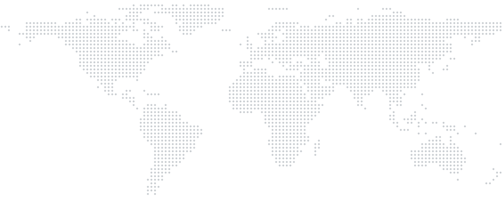
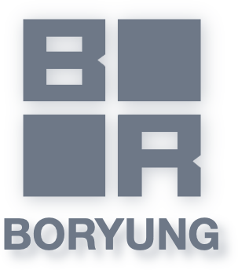
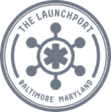

Company
Baltimore and Seoul.
Headquarters101 W Dickman St, Suite 900
Baltimore, MD 21230, USA
Baltimore, MD 21230, USA
R&D lab205-15 Gasan Digital 1-ro,
Geumcheon-gu, Seoul, Korea
Geumcheon-gu, Seoul, Korea

Baltimore SeoulEasier dialysis, anywhere.
We build dialysis systems and services that let patients and their families get better care while protecting their quality of life.
Milestones
Since 2020, step by step.
- 2020FoundedJanuary 8, Maryland
- 2023ASN Kidney WeekFirst conference showing
- 2024CES Innovation AwardASN 2024 exhibition, paper
- 2025U.S. defense programTrademark and patents
- 2026ASN 2026 exhibitionTry Everything 2026, Seoul
- 2026–27Hospital HDFDA 510(k) in preparation · target 2027
- 2028–29Home HDTreatment at home
- 2029–30+ICUAcute dialysis
Our business team in Baltimore and engineering team in Seoul are building one system that brings treatment to where patients live.
Team
Built by people who know dialysis.
Engineers and a practicing nephrologist work as one team, so the people who build it and the people who use it design it together from day one.
Engineering · SeoulWe design the mechanics, electronics, firmware and software ourselves, all the way to working prototypes.
Clinical & regulatoryDeveloped with a practicing nephrologist; FDA 510(k) in preparation.
Business & operationsHospital and partner relationships, production and quality.
Partners

